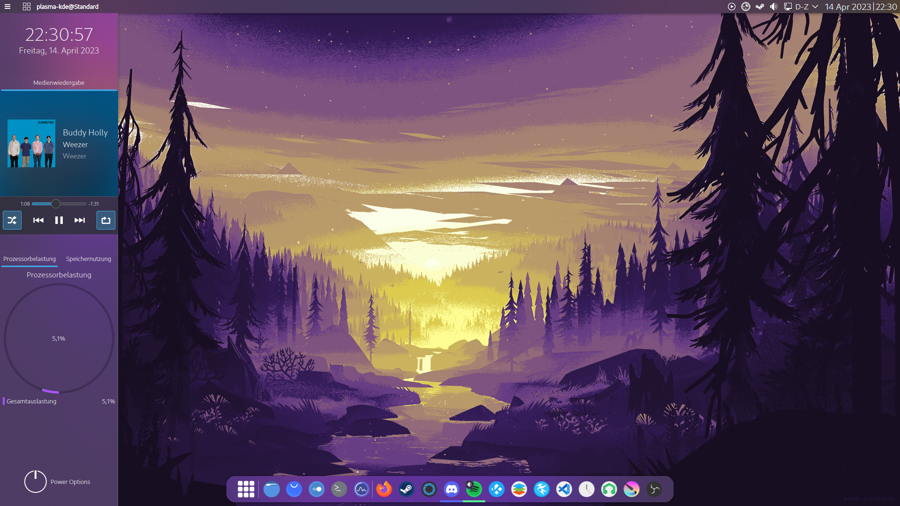

I use arch btw
I am an avid Linux user and love the customizability so much that I change up my desktop every month or so. This subpage basically functions as some kind of gallery of these desktops.
Feel free to right click an image and view it in a new tab in order to zoom in.
First Desktop - Nov 2022
So, basically the first customization I made in Linux. Looking back at it, it looks pretty bad haha. Still, this workflow of a top bar and a bottom bar: It has been kept for a long time.

Layan - Dec 2022
Started using the Layan theme - Also put in a "start menu" thats similar to the fullscreen start menu I used back in Windows10.


Firewatch Valley - Apr 2023
Played around a lot with the colours. Also made myself this menu on the side of the screen which I was very proud of.
Dark side of the Eevee - I forgor 2023
Decided to try out a simple layout again - It's pretty similar to Windows. After using that one, I switched to Debian on xfce and used that for a while - in there, I had a similar layout.

Hexarchs - July 2023
I use arch btw :); Went for a bit of a futuristic look. Looks fairly nice, but I honestly dont like the workflow with this bottom dock if I'll be honest.
The Refugee - July 2023
Ok now this: I didn't know Kwin had a tiling manager built in. What I did is that I grabbed Latte Dock and made transparent docks on all sides of the screen so that it looks like theres this border for tiled windows. Other than that, really proud of that desktop, it looks awesome.

Catppuccin - Sep 2023
I became more of an avid Linux user by using a theme such as "Catppuccin".

Catppuccin x KwinTiling - Oct 2023
Wait a minute, you're telling me Kwin has a tiling manager built in?????
linebreaks so that the page feels a bit better when closing a desktop :)